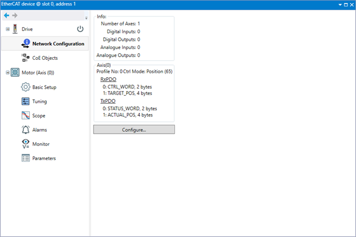
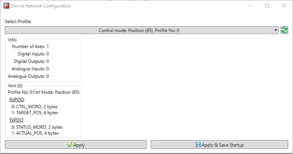
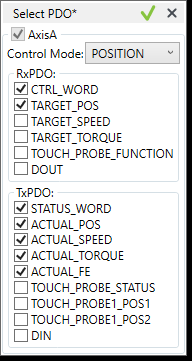

EtherCAT devices allow data exchange between the controller and the device via two methods, service data and process data. Service data allows parameter access to the device in an adhoc fashion. Process data is a set of data which is exchanged between the master and slave on a cyclic basis. The process data exchanged between the master and slave is setup when the network starts up and is referred to as a device profile.
Depending on the application it may be necessary to exchange different data between the master and slave. Generally, this data set is kept to a minimum to improve overall controller and network performance.
The Network Configuration screen allows the selection of different device profiles (different process data exchange maps).
The controller firmware supports a set of pre-defined profiles:
Position Control
|
Profile No |
Master to Slave (RxPDO) |
Slave to Master (TxPDO) |
|
0 (default) |
Control Word, Target Position |
Status Word, Actual Position |
|
1 |
Control Word, Target Position |
Status Word, Actual Position, Actual Following Error |
|
2 |
Control Word, Target Position, Touch Probe Function |
Status Word, Actual Position, Actual Following Error, Touch Probe Status, Touch Probe1 Pos1, Touch Probe1 Pos2, Touch Probe2 Pos1, Touch Probe2 Pos2 |
|
3 |
Control Word, Target Position, Touch Probe Function, Digital Outputs |
Status Word, Actual Position, Actual Following Error, Touch Probe Status, Touch Probe1 Pos1, Touch Probe1 Pos2, Touch Probe2 Pos1, Touch Probe2 Pos2, Digital Inputs |
|
4 |
Control Word, Target Position, Digital Outputs |
Status Word, Actual Position, Actual Following Error, Digital Inputs |
|
5 |
Control Word, Target Position, Digital Outputs |
Status Word, Actual Position, Actual Following Error, Actual Current, Digital Inputs |
Speed Control
|
Profile No |
Master to Slave (RxPDO) |
Slave to Master (TxPDO) |
|
0 (default) |
Control Word, Target Speed |
Status Word, Actual Position |
|
1 |
Control Word, Target Speed, Touch Probe Function |
Status Word, Actual Position, Touch Probe Status, Touch Probe1 Pos1, Touch Probe1 Pos2, Touch Probe2 Pos1, Touch Probe2 Pos2 |
|
2 |
Control Word, Target Speed, Touch Probe Function, Digital Outputs |
Status Word, Actual Position, Touch Probe Status, Touch Probe1 Pos1, Touch Probe1 Pos2, Touch Probe2 Pos1, Touch Probe2 Pos2, Digital Inputs |
|
3 |
Control Word, Target Speed, Digital Outputs |
Status Word, Actual Position, Digital Inputs |
|
5 |
Control Word, Target Speed, Digital Outputs |
Status Word, Actual Position, Actual Current, Digital Inputs |
Torque Control
|
Profile No |
Master to Slave (RxPDO) |
Slave to Master (TxPDO) |
|
0 (default) |
Control Word, Target Torque |
Status Word, Actual Position |
|
1 |
Control Word, Target Torque, Touch Probe Function |
Status Word, Actual Position, Touch Probe Status, Touch Probe1 Pos1, Touch Probe1 Pos2, Touch Probe2 Pos1, Touch Probe2 Pos2 |
|
2 |
Control Word, Target Torque, Touch Probe Function, Digital Outputs |
Status Word, Actual Position, Touch Probe Status, Touch Probe1 Pos1, Touch Probe1 Pos2, Touch Probe2 Pos1, Touch Probe2 Pos2, Digital Inputs |
|
3 |
Control Word, Target Torque, Digital Outputs |
Status Word, Actual Position, Digital Inputs |
|
5 |
Control Word, Target Torque, Digital Outputs |
Status Word, Actual Position, Actual Current, Digital Inputs |
The Network Configuration screen shows the selected profile and the data mapped between master and slave.
RxPDO is data from the master to the slave
TxPDO is data from the slave to the master
The default is:
Profile No. 0 (zero)
Position Control

Clicking on the ‘Configure…’ button allows the selection of device profile and control mode, either from a drop-down list of pre-defined maps, or by defining a custom profile.

Use the ‘Select Profile’ drop down to show all available profiles. Either select the required profile or use ‘Define Custom Profile’ to create a new one.
When creating a custom profile, select the data required using the check boxes. For example, if axis is running in position control mode, but requires the addition of actual speed and actual torque and actual following, simply click the checkboxes

Once the select has been confirmed, this will create a new profile which can be selected in the same way as the pre-defined profiles. Custom profiles are enumerated from 1000 and saved as part of the project in the EtherCAT extension (EC_EXTEND) file. Once created a custom profile can be re-used on other axes (providing the device is the same).
After the desired profile has been selected there are several options on how to apply the change.
Using the Apply button the profile selection is done in a way which will be lost if the controller is powered off. The new profile is saved in the EC_EXTEND file, but the profile used will revert to the default selection of 0 (zero) after a power cycle.
Cancel, do not change the configuration
Apply, change the DRIVE_PROFILE and DRIVE_MODE based on the selected profile, but do not re-start the network. This means the new profile will be applied next time the network is re-started. This option us useful is more than one device is being setup.
Apply and Restart Network, change the DRIVE_PROFILE and DRIVE_MODE based on the selected profile and re-start the network. This will change the profile and restart the EtherCAT network, the network will take a few seconds to re-start. Once it is back to operational the new profile will be in use.
Using the Apply and Save Startup button the profile selection is can be saved into the MC_CONFIG file. This means it will be applied when the controller starts up. The EC_EXTEND file contains details of the profiles, the MC_CONFIG file selects which profile to use on startup.
Cancel, do not change the configuration
Apply, change MC_CONFIG to add the selection of DRIVE_PROFILE and DRIVE_MODE based on the selected profile , but do not re-start the network or reset the controller. This means the new profile will be applied next time either the network is re-started, or the controller is reset. This option us useful is more than one device is being setup.
Apply and Restart Network, change MC_CONFIG to add the selection of DRIVE_PROFILE and DRIVE_MODE based on the selected profile and re-start the network. This will change the profile and restart the EtherCAT network, the network will take a few seconds to re-start. Once it is back to operational the new profile will be in use. As the selection is saved in MC_CONFIG, if you turn the controller off the new profile will be used the next time the controller is turned on.
Apply and Reset Controller, change MC_CONFIG to add the selection of DRIVE_PROFILE and DRIVE_MODE based on the selected profile and reset the controller. This will force a controller reset. When the controller starts up it will apply the new profile, based on the selection in MC_CONFIG. The controller will take a few seconds to re-boot. Once it is back the new profile will be in use. As the selection is saved in MC_CONFIG, if you turn the controller off the new profile will be used the next time the controller is turned on.